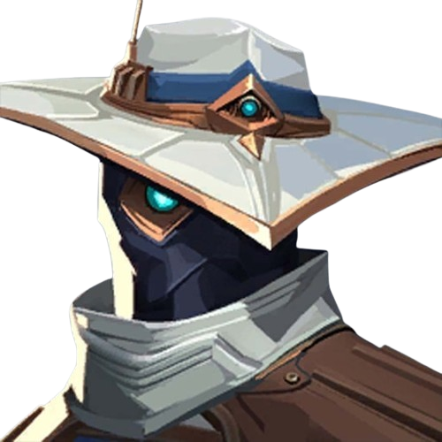
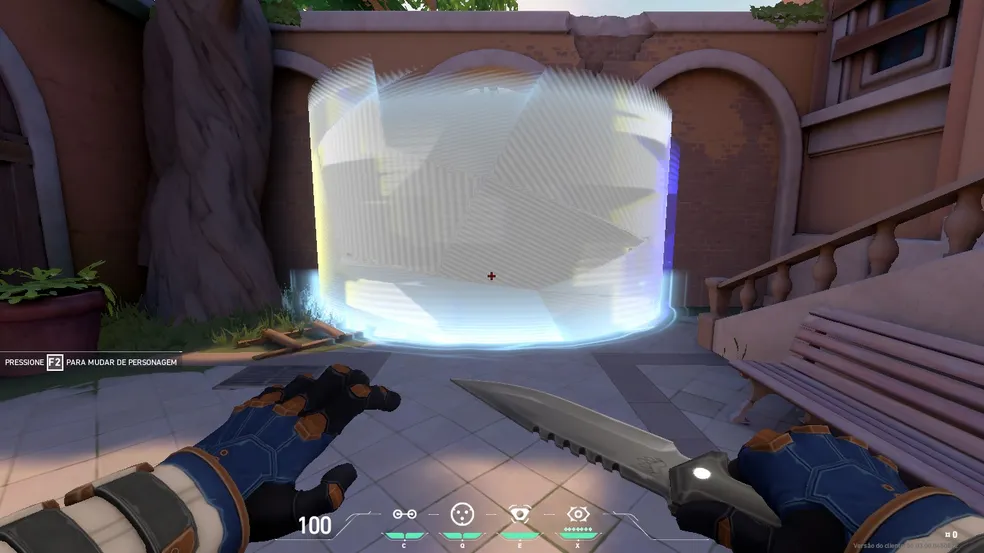
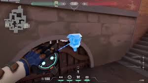
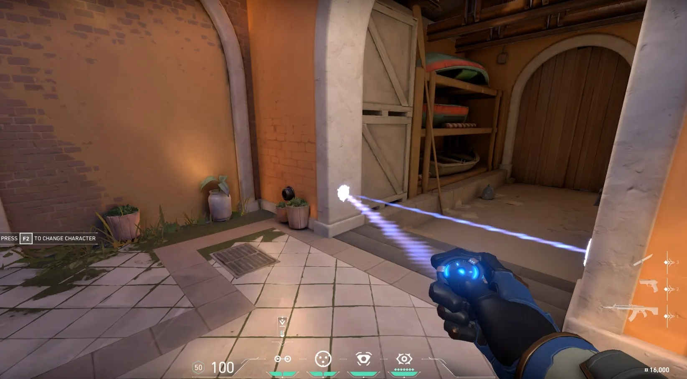

CYPHER
Função: Sentinela
Biografia: O vigia marroquino Cypher é um verdadeiro sistema de vigilância de um homem só que revela todos os segredos inimigos. Nenhum movimento passa despercebido, nenhum detalhe esquecido.
Habilidades
Jaula Cibernética
Q - Lança uma jaula que bloqueia a visão e reduz a velocidade de quem passar.
Câmera de Vigilância
E - Coloca uma câmera que pode ser controlada para disparar dardos marcadores.
Fio-Armadilha
C - Instala um fio invisível entre duas paredes que revela e enrijece inimigos.
Assalto Neural

X - Revela a localização de todos os inimigos vivos ao usar um cadáver aliado.
Setup de Vigilância
Melhores locais para câmeras:
- Bind - A torre do meio
- Haven - Garagem C
- Ascent - Meio do mapa
- Split - Ventilação A
Rotas para fios-armadilha:
- Entradas de bomb sites
- Saídas de spawn inimigo
- Passagens estreitas
Dicas de Jogabilidade
- Posicione câmeras em ângitos altos e discretos
- Use fios-armadilha em duplas para cobertura total
- Jaulas são ótimas para retardar pushes inimigos
- Assalto Neural pode virar o jogo em rodadas decisivas